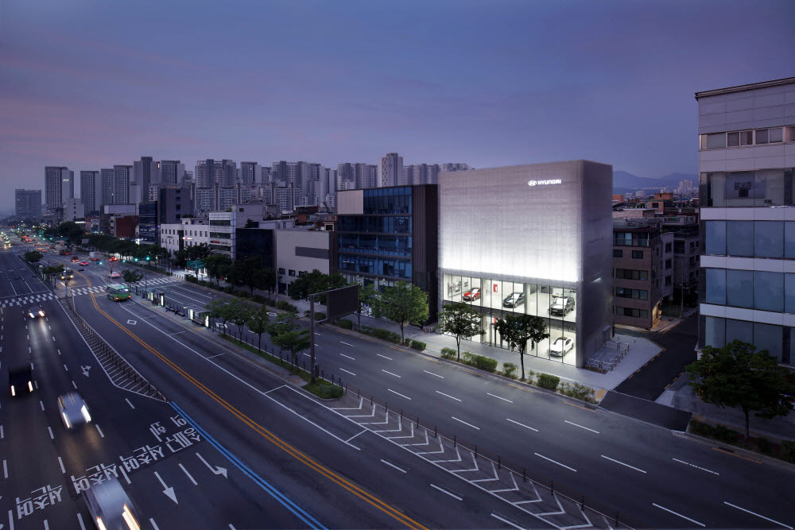
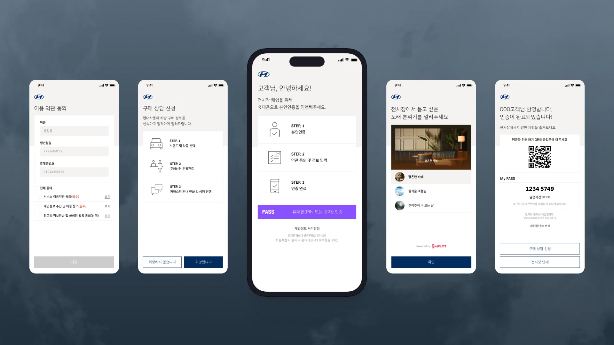
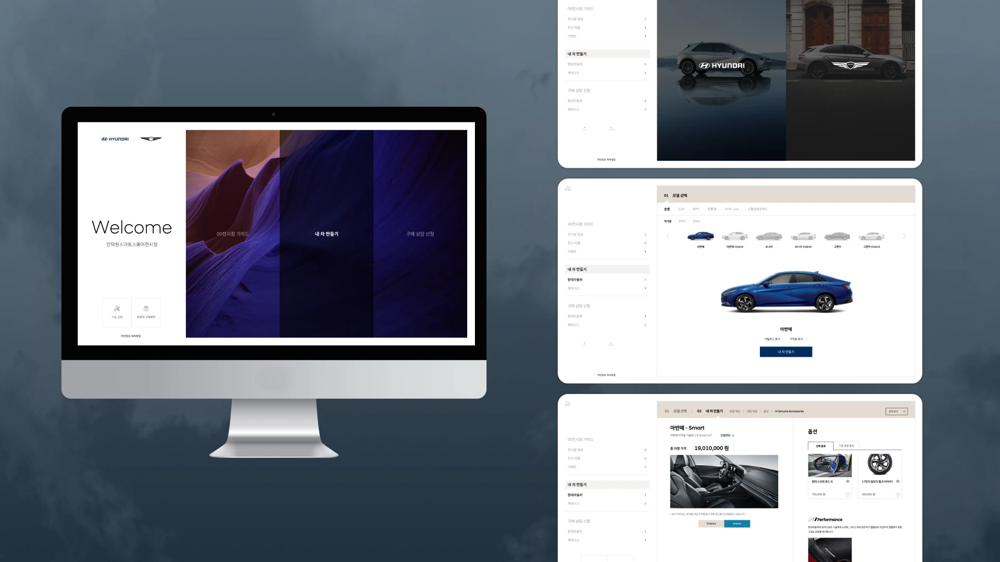

Showroom Experience / Contactless Operation
모바일 인증과 디지털 차량 탐색을 연결해 전시장 방문 경험을 비대면 고객 여정으로 설계했습니다.
모바일 QR 출입 인증을 시작으로 사전 정보 입력, 차량 탐색, 디지털 컨피규레이터, 상담·시승 신청까지 이어지는 전시장 운영 흐름을 하나의 디지털 서비스로 설계했습니다.
QR모바일 기반 출입 인증
iMac차량·옵션 탐색 접점
O2O전시장과 상담의 연속성
기간2023.10 – 2024.03
프로젝트현대자동차 전시장 언택트 운영 시스템
담당서비스 기획 · UX/UI · 요구사항 · 운영 흐름

전시장에 필요한 고객 정보와 차량 탐색을 한 번의 방문 흐름으로 연결했습니다.
비대면 소비 환경이 확산되면서 출입, 차량 탐색, 상담 신청을 분리된 절차로 제공하기보다 일관된 디지털 흐름으로 묶을 필요가 있었습니다. 방문 목적과 인증 정보를 바탕으로 고객이 스스로 차량을 비교하고 다음 행동까지 선택할 수 있도록 서비스 구조를 정의했습니다.
주요 접점은 수작업에 의존했고, 고객 경험과 운영 정보는 분리되어 있었습니다.
입장 절차를 단순 인증이 아니라 차량 탐색과 상담을 위한 시작점으로 설계했습니다.
01모바일 QR로 전시장 출입 인증
02방문 목적과 기본 정보 입력
03전시장 내 차량·공간 안내 확인
04iMac에서 차량 구성과 옵션 비교
05견적 확인 후 상담·시승 신청
06운영자가 고객 맥락을 확인하고 후속 응대
고객 경험과 현장 운영이 같은 정보를 바라보도록 역할과 기준을 정리했습니다.
전시장 운영 방향과 고객 접점 요구사항 협의
방문 정보 확인과 상담·시승 후속 응대
- 고객 여정 설계입장부터 차량 탐색, 상담 신청까지의 서비스 흐름 정의
- 모바일 인증 기획QR 인증과 사전 정보 입력 화면·정책 설계
- 탐색 경험 설계디지털 컨피규레이터의 차량·옵션 비교 정보 구조 정리
- 운영 기준 정리방문자 정보와 후속 상담을 연결하는 요구사항 정의
역할 범위: 모바일 인증, 사전 설문, 차량 정보 탐색, 디지털 컨피규레이터, 상담·시승 신청의 서비스 흐름과 화면 기준을 기획하고 현장 운영 접점과 연결되는 요구사항을 정리했습니다.
모바일과 전시장 화면이 각자의 역할을 갖고 다음 행동을 안내하도록 설계했습니다.

경험 01 · 모바일 진입
인증과 방문 안내를 하나의 진입 흐름으로 구성
약관 동의, 본인 인증, 방문 안내, 차량 추천까지 필요한 정보를 단계적으로 제공해 고객이 전시장 경험을 시작하기 전 자신의 방문 맥락을 완성하도록 설계했습니다.

경험 02 · 차량 탐색
대형 화면에서 차량 구성과 옵션 비교에 집중하도록 설계
전시장 내 iMac 디지털 컨피규레이터에서 차량 선택, 옵션 비교, 견적 확인을 직관적으로 수행하고 이후 상담·시승 신청으로 이어지도록 정보 구조를 정리했습니다.
비대면 환경에서도 고객이 멈추지 않고 다음 단계로 이동하도록 판단 기준을 세웠습니다.
모바일에서 시작한 방문 맥락을 현장 화면까지 이어갔습니다.
QR 인증과 사전 정보 입력을 단순 출입 절차로 끝내지 않고, 고객의 방문 목적과 차량 관심사가 전시장 탐색 경험에 반영될 수 있는 진입 접점으로 정의했습니다.
차량 탐색은 정보 확인이 아니라 비교·상담을 위한 준비 과정으로 설계했습니다.
디지털 컨피규레이터에서 차량 선택과 옵션 비교, 견적 확인이 순차적으로 이어지게 해 고객이 상담 전에도 구매 검토에 필요한 내용을 스스로 확인할 수 있도록 했습니다.
고객의 자율성과 운영자의 후속 응대를 함께 고려했습니다.
고객은 모바일과 현장 디스플레이로 자유롭게 탐색하고, 운영자는 방문 정보와 상담 신청을 바탕으로 필요한 시점에만 응대하도록 역할을 나눴습니다.
인증과 탐색의 화면 상태를 구현 가능한 수준으로 구체화했습니다.
약관 동의, 본인 인증, 방문 안내, 차량 추천을 하나의 모바일 진입 흐름으로 정리한 화면 설계
차량 탐색, 옵션 비교, 견적 확인을 전시장 대형 화면에서 수행하도록 구성한 디지털 컨피규레이터 설계
전시장 방문을 인증에서 상담까지 연결되는 디지털 운영 경험으로 전환했습니다.
모바일 QR 인증과 사전 정보 입력을 전시장 방문의 단일 진입 흐름으로 설계
차량·옵션·견적 탐색을 전시장 내 디지털 컨피규레이터로 구체화
고객의 자율 탐색과 상담·시승 신청이 연결되는 고객 여정 정의
방문자 정보와 후속 응대를 연결하는 전시장 운영 요구사항 정리